<section class="relative overflow-x-hidden bg-black bg-gradient-to-t from-white/50 to-transparent py-14 dark:from-white/[0.02] md:py-20">
    <div class="absolute inset-x-0 top-0 bg-black">
        
    </div>
    <div class="container relative z-[1]">
        <div class="mb-10 max-w-[410px]">
            <div class="mb-5 flex items-center gap-10">
                <h6 class="text-lg font-extrabold uppercase text-secondary"><span class="text-primary">/</span> Portfolio</h6>

            </div>

        </div>
         <div class="container">
        <div class="overflow-x-auto">
            <ul class="filters portfolio-filter mx-auto flex w-max gap-7 whitespace-nowrap pb-2.5 font-bold dark:text-white">

                <li class="filter" [ngClass]="{ active: activeTab === 'latest' }">
                    <button
                        type="button"
                        class="rounded-[10px] bg-gray/5 py-4 px-5 leading-5 transition hover:bg-secondary hover:text-white"
                        (click)="activeTab = 'latest'"
                    >
                        Last Project
                    </button>
                </li>
                <li class="filter" [ngClass]="{ active: activeTab === 'own-applications' }">
                    <button
                        type="button"
                        class="rounded-[10px] bg-gray/5 py-4 px-5 leading-5 transition hover:bg-secondary hover:text-white"
                        (click)="activeTab = 'own-applications'"
                    >
                        Own Applications
                    </button>
                </li>
                <li class="filter" [ngClass]="{ active: activeTab === 'mini-apps' }">
                    <button
                        type="button"
                        class="rounded-[10px] bg-gray/5 py-4 px-5 leading-5 transition hover:bg-secondary hover:text-white"
                        (click)="activeTab = 'mini-apps'"
                    >
                        Mini Apps (Courses)
                    </button>
                </li>
                <li class="active filter" [ngClass]="{ active: activeTab === 'all' }">
                    <button
                        type="button"
                        class="rounded-[10px] bg-gray/5 py-4 px-5 leading-5 transition hover:bg-secondary hover:text-white"
                        (click)="activeTab = 'all'"
                    >
                        All Work
                    </button>
                </li>

            </ul>
        </div>
        <div class="projects mt-10 grid gap-8 sm:grid-cols-2 " [ngClass]="activeTab === 'latest' ? 'lg:grid-cols-2 ' : 'lg:grid-cols-3'">

            <div *ngFor="let project of projects" class="project" [ngClass]="activeTab === 'all' || project.categories.includes(activeTab) ? 'block' : 'hidden'">
                <div
                    class="relative rounded-3xl border border-transparent bg-white drop-shadow-[5px_10px_80px_rgba(119,128,161,0.15)] transition duration-500 hover:border-secondary hover:bg-secondary/20 dark:bg-gray-dark dark:drop-shadow-none"
                >
                    <a [routerLink]="['portfolio-detail', project.id]" class="absolute top-0 h-full w-full ltr:left-0 rtl:right-0"></a>
                    
                    <div class="p-5 text-sm font-bold">
                        <h6 class="mb-1 text-black dark:text-white">{{project.title}}</h6>
                        <p>{{project.main_technologies}}</p>
                        <p class="text-secondary mt-1">{{project.year}}</p>
                    </div>
                </div>
            </div>

        </div>
    </div>
    </div>
</section>
